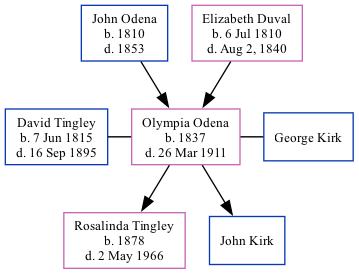

Olympia Eugenie Kirk (née Odena) 1837 - 1911
[ Home ] | [ Calendar ] | [ Surnames Index ] | [ Family History ]The child of John Odena and Elizabeth Duval, Olympia Odena, the three times great-aunt of Michele Copp (née Phillips), was born in Charleston, Dorchester, South Carolina, USA in 18371,2,3,4 was married twice - to David Tingley (in 1876 in Harvey, Albert, New Brunswick, Canada) George Kirk6. She had 2 children: John with George and Rosalinda with David.
Throughout her life, she lived in St Michael and St Phillip, Charleston, South Carolina in 18501; in Bangor Ward 7, Penobscot, Maine in 18602; in Littleton, Aroostook, Maine, USA in 18803; and in Littleton, Aroostook, Maine in 19004.
She died on Mar 26, 1911 in Houlton, Aroostook, Maine5.
Parents
- John Hypolite was born in 1810
- Elizabeth was born on Jul 6, 1810
Children
- Rosalinda was born in 1878
Citations
- 1850 United States Federal Census Online publication - Provo, UT, USA: The Generations Network, Inc., 2005.Original data - United States of America, Bureau of the Census. Seventh Census of the United States, 1850. Washington, D.C.: National Archives and Records Administration, 1850. M432,
- 1860 United States Federal Census Online publication - Provo, UT, USA: The Generations Network, Inc., 2004.Original data - United States of America, Bureau of the Census. Eighth Census of the United States, 1860. Washington, D.C.: National Archives and Records Administration, 1860. M653, 1
- 1880 United States Federal Census Online publication - Provo, UT, USA: The Generations Network, Inc., 2005. 1880 U.S. Census Index provided by The Church of Jesus Christ of Latter-day Saints © Copyright 1999 Intellectual Reserve, Inc. All rights reserved. All use is subject to the limite
- 1900 United States Federal Census Online publication - Provo, UT, USA: MyFamily.com, Inc., 2004.Original data - United States of America, Bureau of the Census. Twelfth Census of the United States, 1900. Washington, D.C.: National Archives and Records Administration, 1900. T623, 1854 rolls.
- Ancestry Family Trees Online publication - Provo, UT, USA: The Generations Network. Original data: Family Tree files submitted by Ancestry members.
- 1900 United States Federal Census Online publication - Provo, UT, USA: MyFamily.com, Inc., 2004.Original data - United States of America, Bureau of the Census. Twelfth Census of the United States, 1900. Washington, D.C.: National Archives and Records Administration, 1900. T623, 1854 rolls.
Family Tree
Generated by ged2site. Last updated on Sep 18, 2024